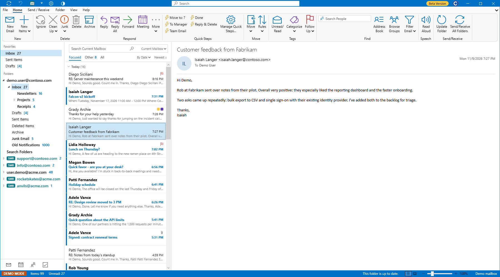
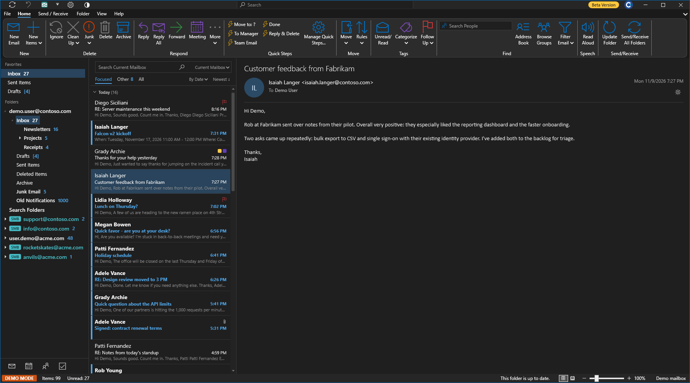
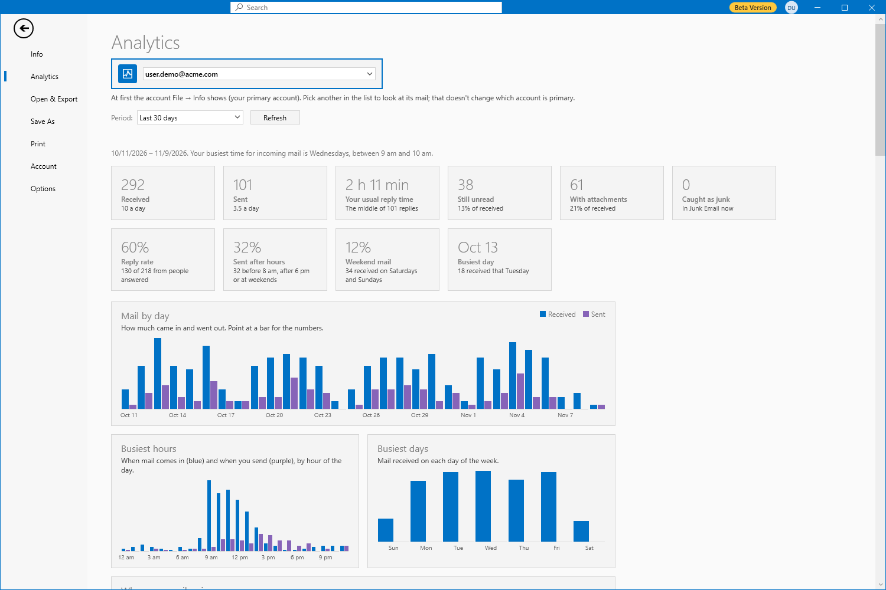
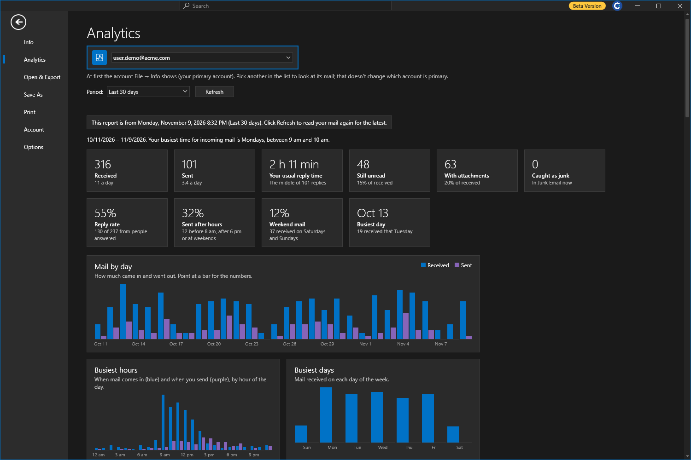

Classic Outlook, feature for feature
InCloseMail was checked against classic Outlook, screen by screen: if you reach for something out of habit, it’s where you expect it.
- The layout you knowThe ribbon with File, Home, Send / Receive, Folder, View and Help, the Quick Access Toolbar, the folder pane with Favorites, the message list, the reading pane, the To-Do Bar and Tell me.
- Outlook’s keys and menusOutlook’s keyboard shortcuts, Ctrl+1 to Ctrl+4 between Mail, Calendar, People and Tasks, and Outlook’s right-click menus on messages, folders, names, calendar items, contacts and tasks.
- Mail the way you workConversations, Arrange By and collapsible groups, Change View and View Settings, categories, follow-up flags and reminders, Filter Email, Ignore, Clean Up, Archive and Undo.
- Focused InboxFocused and Other, as in Outlook for Microsoft 365, with Always Move to Other for senders you don’t need to see first.
- Writing messagesSignatures, Auto-Complete, the Address Book, Quick Parts, templates, formatting, Format Painter and styles, AutoCorrect, spell check, voting buttons, Delay Delivery and Save Sent Item To.
- SearchInstant search in the folder, its subfolders, the mailbox or all mailboxes, Refine, Advanced Find, Recent Searches and Search Folders.
- Rules and Quick StepsRules and Alerts that run on the server, Run Rules Now, Always Move Messages From, script rules, rules you can export and import, and Quick Steps with Outlook’s full list of actions.
- Junk Email and Automatic RepliesJunk Email Options with Safe Senders, Block Sender, Not Junk, and out-of-office Automatic Replies.
- CalendarDay, Work Week, Week, Month and Schedule views, meetings with the Scheduling Assistant, Room Finder and Teams, Propose New Time, the Reminders window, shared calendars, calendar groups, internet calendars and Add Holidays.
- PeopleThe full contact form, People, Business Card and List views, contact groups, colleagues’ shared contacts, the Global Address List and Mail Merge.
- TasksYour Microsoft To Do tasks with Outlook’s task form and views: start and due dates, priority, reminders, recurrence and Send Status Report.
- Several accounts, shared mailboxes and GroupsYour work and personal accounts side by side, shared mailboxes and calendars with Send As and Send on Behalf, your aliases in From, and Microsoft 365 Groups.
- Offline and Send/ReceiveCached mail you can read and search offline, Work Offline, Send/Receive groups with Show Progress, and Desktop Alerts with the envelope by the clock.
- Bring your .pst filesOpen an Outlook Data File of any size, import it into your mailbox, or export your mail to one, all without Outlook. Your signatures and Auto-Complete names come over from classic Outlook too.
- Mailbox upkeepMailbox Cleanup with your mailbox’s size and limit, AutoArchive, Recover Deleted Items, Delete All, Save Folder As and Mark All as Read.
- PrintMemo Style with a preview, Quick Print, and the calendar’s Daily, Weekly, Monthly, Tri-fold and Details styles.
- Signed and encrypted mailRead S/MIME messages and sign or encrypt your own, with your Windows certificates.
- ThemesOutlook’s gray Light look, Dark Mode, White and High Contrast.
- Ready for ITA signed Windows Installer package and Group Policy and Intune templates for managed deployment.
Only available from InCloseMail
What classic Outlook never did. If you keep everything, with 20+ years of mail as your own record of who said what, InCloseMail is built for you: it sorts the mail that matters into folders and clears out the newsletters and junk you never needed, across tens of thousands of messages at once, with a single Undo if you change your mind.
- Clean Up My InboxReads every message in a folder, even thousands of them, and groups them: likely junk, newsletters and marketing, people you never answer, co-workers, companies, big messages and old ones. Suggests what to do with each group, lets you select many at once, and puts it all back with one Undo.
- A folder for everyone, in one goThe Rules Wizard looks at who writes to you and makes a folder and a rule for every co-worker (Co-workers › Name) and every company you hear from, then files the mail you already have. Start Over saves your old rules to a backup first.
- Rules that reach back, and don’t tripRun any rule on a folder of any size, with progress and Stop, and a question first on a big one. Rules that would put the same message in two folders are spotted and fixed in one click.
- AnalyticsWho writes to you most, co-workers and companies included, who you write to, your busiest hours and days, how fast you reply, and your biggest folders, all worked out on your PC.
- Your history on your PCKeep years of mail, from every folder, on your PC to read and search offline, and see how much space it takes, next to your mailbox’s size and limit.
- “Why is this suspicious?”A plain-language explanation for messages that look like phishing, with what to do about them.
- A second look before sendingA check for forgotten attachments, outside recipients and replies to many people.
- Read-only when you want itMake any account read-only, so nothing in it can change, or allow only the kinds of change you choose.
- Focused, Other and AllAn All tab beside Focused and Other, so the whole Inbox is one click away.
- The same settings on every PCYour settings and signatures follow you to your other PCs, kept in your own mailbox.
- Work with AI agentsLet Claude and other AI apps read and draft mail in the mailboxes you choose, or copy a message, conversation or folder as clean text for any chatbot.
Classic Outlook, in your colors
Classic Outlook let you pick white, gray or black, and that was it. InCloseMail keeps Outlook’s look, then lets you make it yours.
- The Theme EditorColor each part of the window, from the title bar and ribbon to the folder pane, the message list’s date headings and the calendar’s work hours, and watch InCloseMail change as you pick.
- Start from any themeBegin with Light, White, Dark or a holiday theme, and change only what you want. Everything you leave alone follows the theme you started from.
- On every PC, and to shareYour themes follow you to your other PCs with the rest of your settings, and export to a file to give to someone else.
- Themes for the seasonHoliday themes in light and dark, or one that changes on its own as each holiday comes around.
About the beta
InCloseMail will always be free for personal use. With an Outlook.com, Hotmail, Live or other personal Microsoft account, you’ll never pay for it. Only Microsoft 365 work and business accounts will need a license once the beta ends. During the beta, it’s free for every account.
Each new build is offered inside the app (Help → Check for Updates). Beta builds work until December 31, 2026; after that, a beta build keeps the mail already on your PC readable but stops sending and receiving until you install a newer version.
Found a problem, or missing something you used in Outlook? Use Help → Suggest a Feature or Contact Support in the app.
Support
Questions or problems? See the help pages, or email support@inclosemail.com.
InCloseMail is made by EmuKey LLC. It is not made by, endorsed by or affiliated with Microsoft. Microsoft, Microsoft 365, Outlook and Windows are trademarks of the Microsoft group of companies.